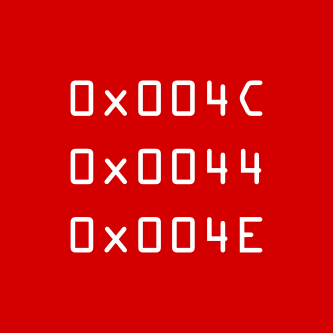

About
It's all about us, geeks. :)
That's what every software developer or tester needs – not being locked in certain platform or company's culture, but have a possibility to share his/her thoughts, experience and passion to software creation among the whole community.
Who said IT people ain't social?!
We are social enough to get together and organize many interesting and positive things. If you're social too come and join one of our events!
